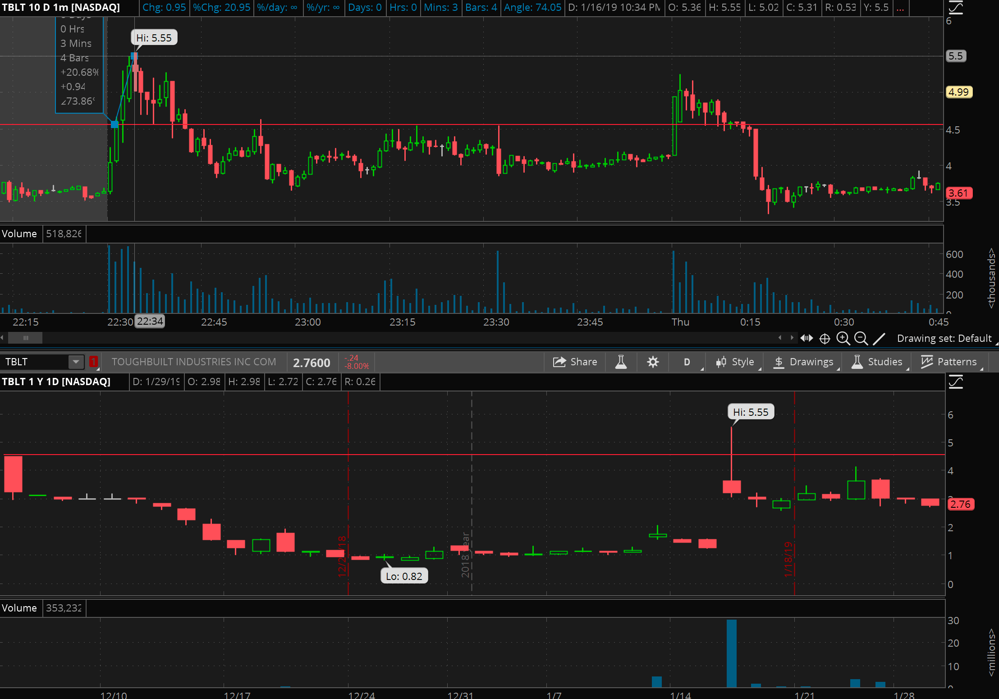
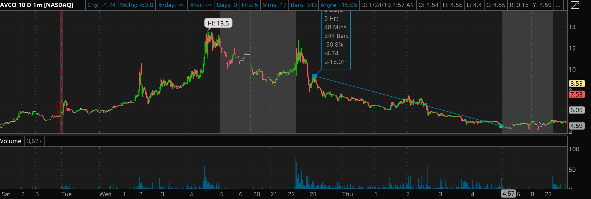

This blog just gave away million-dollars worth of stock trading strategy that most of the ‘trading gurus’ are teaching in their thousand dollar courses. There are tons of strategies and chart patterns that people used as a guide to buy stock. However, I rather focus on only one long strategy and one short strategy that is proved to be working really well. Being extremely picky in the stock market is the only way to avoid losing money and making consistent gains.
This strategy requires a stock to be a low float(less than 10M) stock and it has massive volume(More than 5M at the first hour market open) traded on the intraday. When the stock price is rising and getting close to the previous high point in the history, there is a very big chance that it will break the high point and rise a lot more.
This is because if a low float stock has more than 5M volume traded on the intraday, we know that there are a lot of people already sold the stock and it’s still rising. This means the buying power is really strong. A low float stock has only less than 10M shares for everyone buy and sell. That means it is very easy to push the stock up with very little money for big stock trader.
That’s $1 gain per share which means with $4500 you make $1000 in a few minutes.
This strategy works when a stock went up to more than 50% in a day and the next day it shows signal of weakness. This is a classic ‘pump and dump’ strategy that penny stock market maker used to make profit. We can short the stock when it is getting dump and enjoy the ride back down to its original price point. The key here is how to spot the weakness and make an entry.
That’s when you see the stock struggle to go higher and start to break down huge. It’s best to short at the first bounce as shown above. It’s proved to have higher winning odds and you make as much as 50% gain as you can see above($4/share). Crazy right, that’s the beauty of penny stock.
Of course we know that high profit has higher risk. That’s why we need to have a lot of study and experience to ace in the stock market. Timothy Sykes has spent years stumbling in the stock market and now he finally made it to be one of the best stock traders in the market. He would like to show how he spot these amazing opportunity in the market and make a living out of it. Check this Tim Sykes's strategy to watch him trade live every day.
Copy right, Jayden C. reserved.